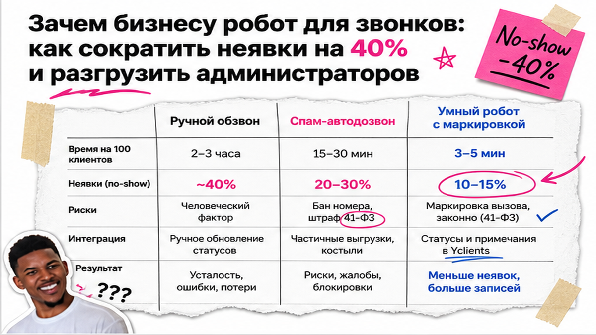
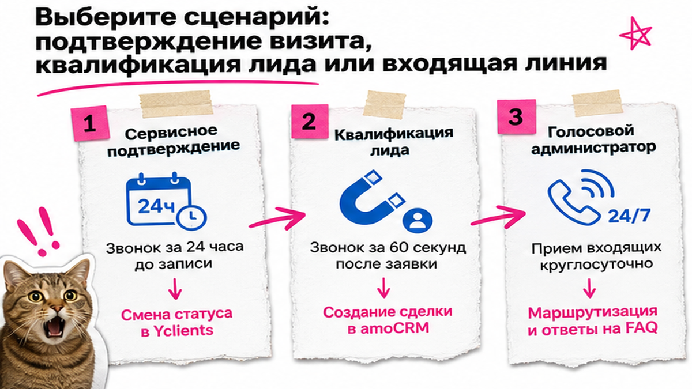
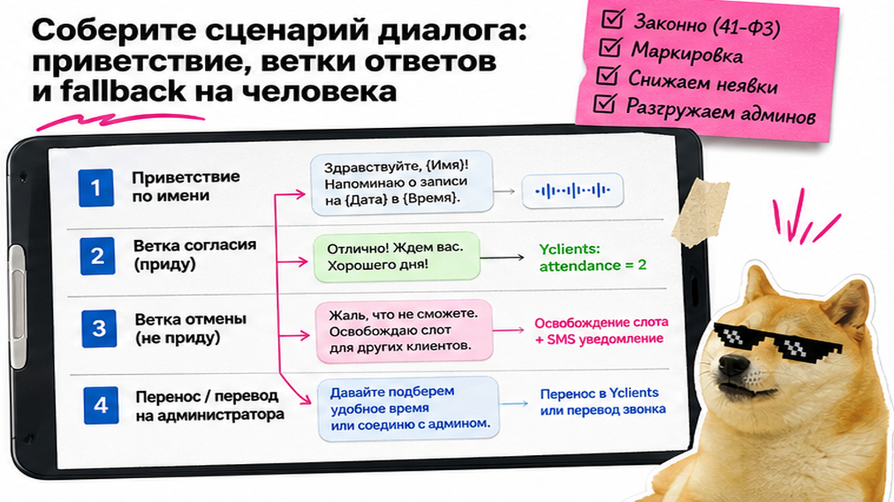

Администратор клиники или салона тратит по 3–4 часа в день на обзвон. При этом до 30–40% клиентов не доходят до визита (no-show), и бизнес теряет от 150 000 рублей в месяц. Ручной обзвон срывается из-за запары на ресепшене, а дешевый автодозвон операторы блокируют. Сервисный голосовой робот для звонков решает задачу за 30 минут. Он звонит за 24 часа до визита, понимает речь и меняет статус в Yclients или CRM без риска бана.
Ключевой вывод: Голосовой робот для звонков берет на себя подтверждение визитов. При согласии система ставит статус "Подтвержден" в CRM, а при отмене сразу открывает слот в расписании. Главное условие в 2026 году – официальная маркировка ("Этикетка" по 41-ФЗ), защищающая от спам-фильтров и повышающая дозвон на 25%.
С 1 сентября 2025 года в РФ действует 41-ФЗ: операторы ("МегаФон", МТС, "Билайн", Т2) блокируют немаркированные вызовы. Штрафы ФАС за спам достигают 1 000 000 рублей. Звонок с брендированием ("Этикетка" или МАВ) показывает имя компании на экране, повышая дозвон на 20–25% и снижая неявки на 35–50%.

В сфере услуг пустые окна – прямой убыток. Когда клиент забывает о записи, мастер простаивает. Одно сорванное окно в 3 000 рублей дает 60 000 рублей потерь в месяц на мастера.
На практике администратор не успевает звонить гостям из-за текучки на кассе. Голосовой робот делает сервисное напоминание за 24 часа до визита, обращается по имени и фиксирует ответ.
| Критерий. | Ручной обзвон. | Спам-автодозвон. | Умный робот с маркировкой. |
|---|---|---|---|
| Скорость (50 звонков). | 2–3 часа работы. | 1–2 мин (сброс). | 3–5 мин в фоне. |
| Риск по 41-ФЗ. | Отсутствует. | Штраф до 1 млн руб. | Нулевой (договор МАВ). |
| Экран смартфона. | Неизвестный номер. | Метка "Спам". | Бренд + "Запись". |
| Статус в CRM. | Вручную в журнале. | Нет интеграции. | Мгновенно (attendance=2). |
| Доля неявок. | 25–40%. | 30–50%. | 10–15%. |
Итоговый вердикт: Немаркированный автодозвон ведет к бану номеров. Используйте умного голосового робота с маркировкой и синхронизацией с расписанием CRM.

В реальном проекте робот-комбайн часто ломается из-за перегруженной логики. Для бизнеса выделяют три сценария:
Рекомендуем начинать с сервисного подтверждения. Сделайте базовую связку за вечер, чтобы устранить простои мастеров.

Сервисный звонок длится 20–30 секунд. Он состоит из четырех блоков:
Распознавание автоответчиков (AMD) сбрасывает вызов на голосовой почте. Добавьте проверку тишины: при паузе более 4 секунд робот повторяет вопрос.
Архитектура подтверждения визита: Триггер в CRM (за 24 ч) → Исходящий вызов ("Этикетка") → Распознавание речи (ASR) → Ветка диалога (Подтверждение / Отмена / Перенос) → Вебхук в Yclients (attendance=2) → Отправка SMS с деталями.
Облачные сервисы подключаются к Yclients, amoCRM или Битрикс24 по готовым шаблонам. Разберем три термина простыми словами:
Пошаговый процесс подключения сервисного робота к расписанию:
Команда AI Brother реализует внедрение голосовых роботов и CRM-интеграций под ключ. Используйте готовые модули, чтобы избежать ошибок настройки.
Типичная ошибка – купить виртуальный номер и запустить обзвон без подготовки. Через 20–30 звонков операторы пометят номер как спам. Избегайте немаркированных вызовов и следуйте регламенту по 41-ФЗ:
Перед переводом подтверждения визитов на робота проверьте готовность системы по чеклисту:
Критерий успешного внедрения: Робот подтверждает от 70% до 85% записей без участия персонала. Администратор тратит на утренний контроль не более 10 минут, неявки сокращаются в 1,5–2 раза, а расписание мастеров остается плотным. Обсудить архитектуру внедрения можно в Telegram-канале @ai_brother_ru.
Материал проверен: Михаил Литвинов (Основатель AI Brother, практик внедрения ИИ-систем и CRM-автоматизации).
Источники и факты: возможности REST API Yclients, сценарии диалогов Stexa AI, требования 41-ФЗ и сервиса "Этикетка" (МТС Exolve, Mango Office) верифицированы по официальной документации; частотность запросов – по Яндекс Вордстат на август 2026 года.
Минута синтеза и распознавания речи стоит 3–5 рублей. Звонок длится 20–30 секунд, поэтому подтверждение обходится в 1,5–2,5 рубля. При 500 записях в месяц расходы составят около 1 000 – 1 500 рублей, что окупается спасением одного сорванного визита.
Модели NLU анализируют смысл фразы, а не только слово "Да". Ответы "Буду", "Подъеду", "Успеваю" распознаются как согласие. При сообщении об опоздании робот подтверждает визит и ставит комментарий в журнал.
Система делает повтор через 60 минут (не более 2–3 звонков в день). Если дозвониться не удалось, робот отправляет напоминание в WhatsApp или SMS со ссылкой на подтверждение, а администратор видит задачу в CRM.
Да, сервисы подключаются через готовые модули и no-code коннекторы (Albato, Make). Настройка сводится к генерации API-ключа в CRM, сопоставлению полей (имя, дата, мастер) и выбору шаблона диалога за 15–30 минут.
Блокировки по 41-ФЗ применяются к холодному спаму. При сервисном подтверждении клиенты сами оставляют номер при записи. При официальной маркировке ("Этикетка" или МАВ) операторы пропускают вызовы с именем бренда.
Устаревший IVR воспроизводит запись и требует нажимать цифры на телефоне. Умный голосовой робот ведет живой диалог на естественном русском языке, адаптируется к ответу и общается как живой сотрудник.